한국사능력검정시험-중급(폐지) (2014-10-25 기출문제)
1. 밑줄 그은 ‘이 시대’ 의 생활 모습으로 옳은 것은? [2점]
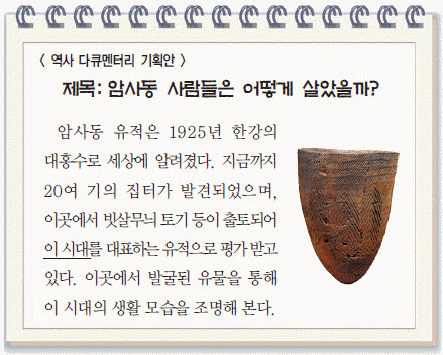
- 갈판과 갈돌로 곡식을 갈았다.
- 주로 동굴이나 막집에서 살았다.
- 거푸집으로 청동 거울을 제작하였다.
- 명도전을 사용하여 중국과 교류하였다.
- 철제 농기구를 사용하여 농사를 지었다.
(정답률: 88%)

2. (가)에 들어갈 내용으로 옳은 것은? [2점]
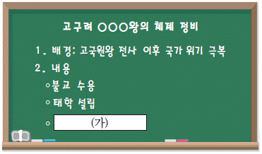
- 낙랑 축출
- 신집 편찬
- 율령 반포
- 평양 천도
- 영락 연호 사용
(정답률: 93%)
3. 다음 지역을 지도에서 옳게 찾은 것은? [3점]
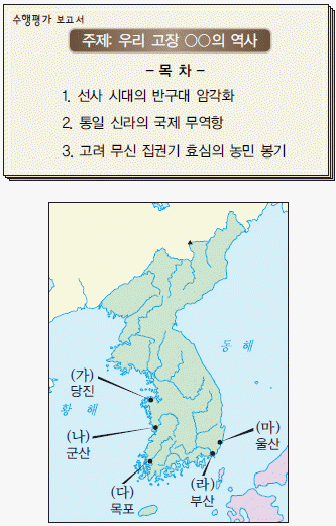
- (가)
- (나)
- (다)
- (라)
- (마)
(정답률: 61%)
4. 다음 풍속이 있었던 나라에 대한 설명으로 옳은 것은? [2점]
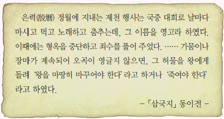
- 상좌평 등의 16관등을 두었다.
- 천군이 관장하는 소도가 있었다.
- 신지, 읍차 등의 지배자가 있었다.
- 왕 아래 마가, 우가, 저가, 구가 등이 있었다.
- 귀족들이 화백 회의에서 국가 중대사를 결정하였다.
(정답률: 85%)
5. (가) 나라에 대한 설명으로 옳지 않은 것은? [2점]
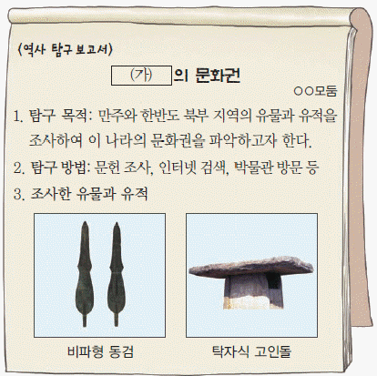
- 옥저와 동예를 정복하였다.
- 한의 침략으로 멸망하였다.
- 청동기 문화를 바탕으로 건국되었다.
- 8조법을 만들어 사회 질서를 유지하였다.
- 한과 진국 사이에서 중계 무역으로 이익을 얻었다.
(정답률: 68%)
6. 다음 특별전에 전시될 문화유산으로 가장 적절한 것은? [2점]
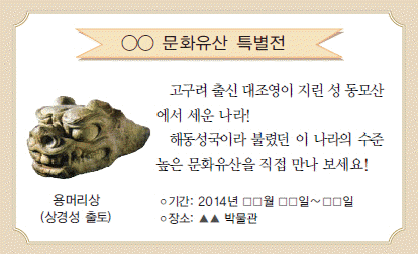
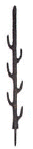
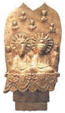
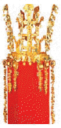
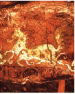
(정답률: 82%)
7. 밑줄 그은 ‘이 왕’ 의 재위 기간에 있었던 사실로 옳은 것은? [2점]
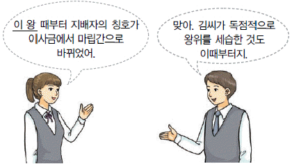
- 백제와 혼인 동맹을 맺었다.
- 고구려의 도움을 받아 왜를 물리쳤다.
- 대가야를 복속하여 영토를 확대하였다.
- 당항성을 통해 중국과 직접 교류하였다.
- 이차돈의 순교를 계기로 불교를 공인하였다.
(정답률: 58%)
8. 다음 민속놀이가 주로 행해진 명절로 옳은 것은? [1점]
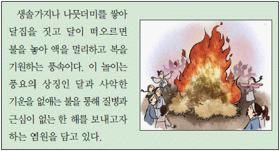
- 단오
- 동지
- 한식
- 한가위
- 정월 대보름
(정답률: 81%)
9. 밑줄 그은 ‘정책’ 으로 옳은 것은? [3점]
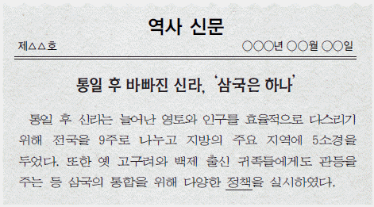
- 9서당을 설치하였다.
- 진대법을 시행하였다.
- 기인 제도를 시행하였다.
- 병부와 상대등을 설치하였다.
- 지방에 22담로를 설치하였다.
(정답률: 51%)
10. (가)에 들어갈 인물의 활동으로 옳은 것은? [1점]
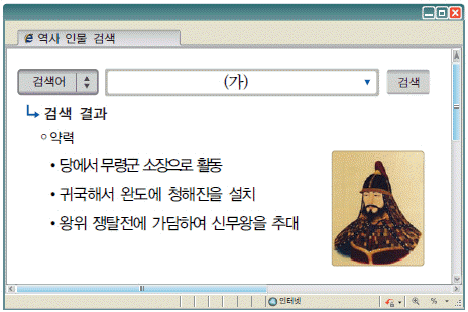
- 우산국을 정복하였다.
- 후백제를 건국하였다.
- 왕오천축국전을 저술하였다.
- 살수에서 수의 군대를 물리쳤다.
- 중국 산둥 지역에 법화원을 세웠다.
(정답률: 79%)
11. 다음 자료를 통해 알 수 있는 시기의 사회 모습으로 옳지 않은 것은? [2점]
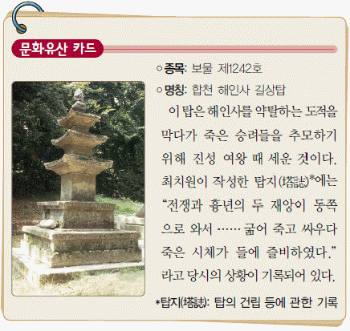
- 지방에서 호족이 성장하였다.
- 원종과 애노의 난이 일어났다.
- 6두품 세력이 골품제를 비판하였다.
- 참선을 중시하는 선종이 유행하였다.
- 귀족들에게 지급하던 녹읍이 폐지하였다.
(정답률: 54%)
12. 다음 인물의 활동으로 옳은 것은? [2점]
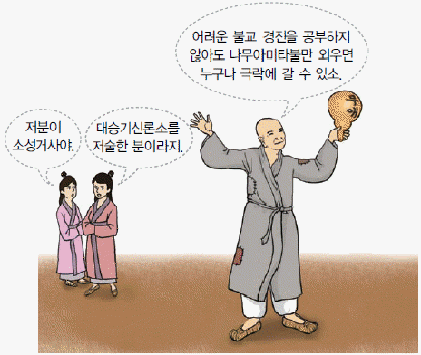
- 불국사를 창건하였다.
- 화랑세기를 저술하였다.
- 화쟁 사상을 주장하였다.
- 풍수지리설을 도입하였다.
- 해동 천태종을 개창하였다.
(정답률: 60%)
13. 밑줄 그은 ‘정책’ 으로 옳은 것은? [2점]
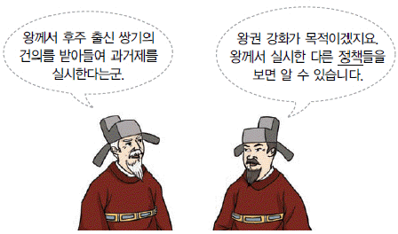
- 정방을 두어 인사권을 장악하였다.
- 12목을 설치하고 지방관을 파견하였다.
- 전민변정도감을 설치하여 권문세족을 견제하였다.
- 노비안검법을 마련하여 강제로 노비가 된 자를 해방시켰다.
- 시무 28조를 수용하여 유교를 국가의 통치 이념으로 삼았다.
(정답률: 79%)
14. 다음 외교 담판의 결과로 옳은 것은? [2점]
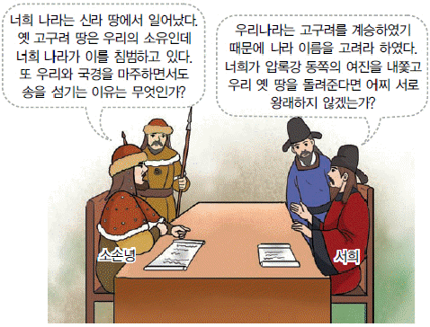
- 강동 6주를 확보하여 영토를 확장하였다.
- 최윤덕을 보내 압록강 지역에 4군을 설치하였다.
- 수도를 강화도로 옮기고 장기 항전을 준비하였다.
- 별무반을 이끌고 동북 지방에 9개의 성을 쌓았다.
- 장문휴가 수군을 이끌고 산둥 반도를 공격하였다.
(정답률: 92%)
15. 다음 상황이 나타난 시기의 사실로 옳은 것은? [3점]
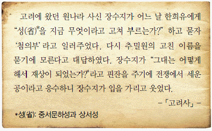
- 묘청 등이 서경 천도를 주장하였다.
- 만적이 신분 해방 운동을 일으켰다.
- 다루가치라는 감찰관이 파견되었다.
- 무신들이 교정도감을 중심으로 권력을 장악하였다.
- 거란의 침입을 물리치기 위해 대장경이 제작되었다.
(정답률: 43%)
16. 밑줄 그은 ‘정책’으로 옳은 것은? [2점]
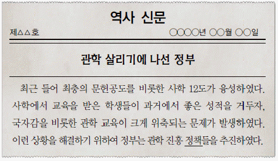
- 중등 교육 기관으로 4부 학당을 설립하였다.
- 장학 기금을 마련하기 위해 양현고를 두었다.
- 문신 재교육을 위해 초계문신 제도를 마련하였다.
- 지방에 경당을 세워 청소년들에게 한학과 무예를 가르쳤다.
- 유학 실력에 따라 관리를 등용하기 위해 독서삼품과를 설치하였다.
(정답률: 45%)
17. 다음 설명에 해당하는 문화유산으로 옳은 것은? [2점]
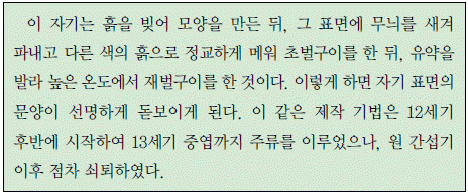
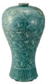
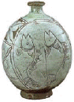
(정답률: 70%)
18. 다음 사건이 일어난 시기를 연표에서 옳게 고른 것은? [1점]
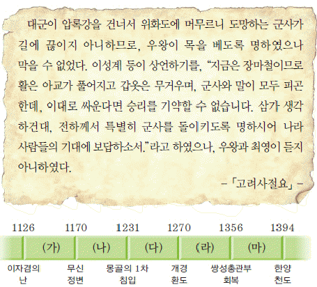
- (가)
- (나)
- (다)
- (라)
- (마)
(정답률: 73%)
19. 다음 수행평가 과제에 보고서 제목으로 적절하지 않은 것은? [2점]
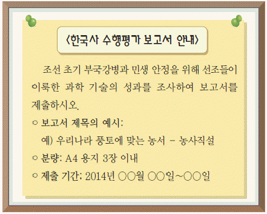
- 세계 최초의 강우량 측정 기구 - 측우기
- 자동 시보 장치를 갖춘 물시계 - 자격루
- 천체 운행을 관측하는 기구 - 혼의, 간의
- 무거운 물체를 쉽게 들어 올리는 기구 - 거중기
- 한양을 기준으로 천체 운동을 계산한 역법서 - 칠정산
(정답률: 67%)
20. 다음 덕목을 내세운 향촌 조직에 대한 설명으로 옳은 것은? [3점]
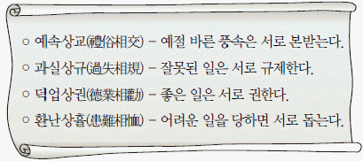
- 유교 윤리를 보급하는 데 이바지하였다.
- 선현에 대한 제사와 교육을 담당하였다.
- 지방의 행정, 사법, 군사권을 장악하였다.
- 민생 안정을 위하여 흥선 대원군 때 철폐되었다.
- 불교 신앙가 관련된 공동체로 매향 활동을 주도하였다.
(정답률: 51%)
21. 교사의 질문에 대한 답으로 옳은 것은? [2점]
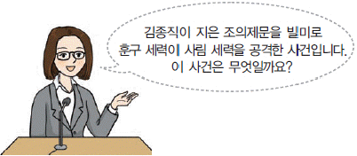
(정답률: 82%)
22. (가) 제도의 시행 결과로 옳은 것은? [2점]
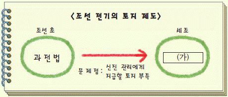
- 백성들에게 정전이 지급되었다.
- 현직 관리에게만 수조권이 지급되었다.
- 품계에 따라 전지와 시지가 지급되었다.
- 수신전, 휼양전의 명목으로 토지가 세습되었다.
- 민정 문서를 작성하여 촌락의 면적 등을 파악하였다.
(정답률: 80%)
23. 밑줄 그은 ‘그’에 대한 설명으로 옳은 것은? [2점]
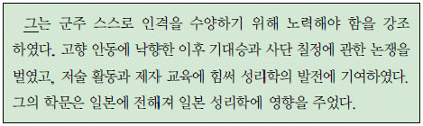
- 강화학파를 이끌었다.
- 시헌력을 도입하였다.
- 지전설을 주장하였다.
- 성학십도를 저술하였다.
- 화성 건설을 건의하였다.
(정답률: 75%)
24. 밑줄 그은 ‘이 법’의 시행 결과로 옳은 것은? [2점]
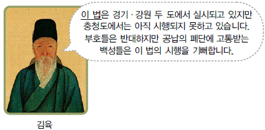
- 양반에게 군포를 부과하였다.
- 사창을 민간에게 운영하게 되었다.
- 풍흉에 따라 조세 액수에 차등을 두었다.
- 농민의 군포 부담액이 1필로 줄어들었다.
- 관청에 물품을 조달하는 공인이 등장하였다.
(정답률: 58%)
25. 다음 상황이 나타난 시기의 경제 모습으로 옳지 않은 것은? [3점]
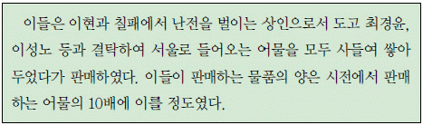
- 상평통보가 전국적으로 유통되었다.
- 농법의 개량으로 광작이 성행하였다.
- 송상, 만상 등이 무역으로 부를 축적하였다.
- 부역제에 기반을 둔 관영 수공업이 성행하였다.
- 민간인에 의한 광산 개발이 활발하게 이루어졌다.
(정답률: 39%)
26. (가)에 대한 설명으로 옳은 것을? [1점]
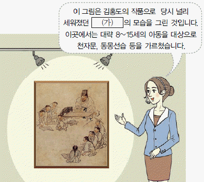
- 중앙에서 경학 박사를 파견하였다.
- 교육 입국 조서 반포로 설립되었다.
- 부, 목, 군, 현에 하나씩 설치되었다.
- 교수와 훈도들이 교육을 담당하였다.
- 서민들의 교육 기회 확대에 기여하였다.
(정답률: 72%)
27. 다음 사극에 나올 수 있는 장면으로 가장 적절한 것은? [2점]
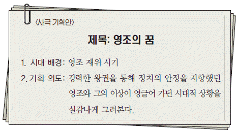
- 나선 정벌을 떠나는 병사
- 규장각 검서관으로 등용되는 서얼
- 홍경래의 난에 참여하는 광산 노동자
- 탕평비 건립을 바라보는 성균관 유생
- 장용영 설치를 논의하는 비변사 당상
(정답률: 77%)
28. 교사의 질문에 대한 학생의 답변으로 옳지 않은 것은? [3점]
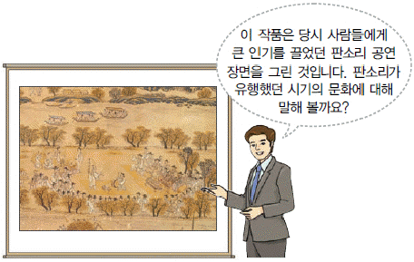
- 사설시조가 널리 유행하였습니다.
- 양반 사회를 풍자한 탈춤이 성행하였습니다.
- 동동, 한림별곡 등의 노래가 유행하였습니다.
- 한글 소설이 서민들 사이에 널리 읽혔습니다.
- 민중의 정서가 반영된 민화가 성행하였습니다.
(정답률: 61%)
29. 다음 자료에 나타난 군사 조식에 대한 설명으로 옳은 것은? [2점]
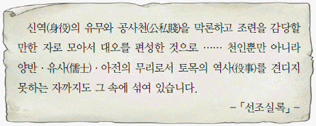
- 포수, 사수, 살수로 구성되었다.
- 군적에 올라 군인전을 지급받았다.
- 궁궐 수비와 수도 방어를 담당하였다.
- 몽골의 침략에 맞서 끝까지 항쟁하였다.
- 평상시 생업에 종사하다 유사시 동원되었다.
(정답률: 56%)
30. 다음 인물이 저술한 책으로 옳은 것은? [1점]
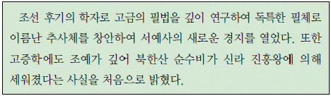
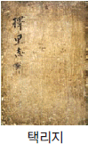
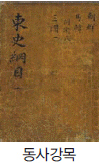
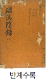
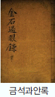
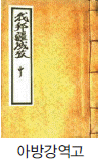
(정답률: 34%)
31. 표를 통해 알 수 있는 시기의 상황으로 옳은 것은 <보기>에서 고른 것은? [2점]
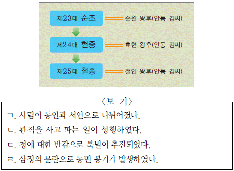
- ㄱ, ㄴ
- ㄱ, ㄷ
- ㄴ, ㄷ
- ㄴ, ㄹ
- ㄷ, ㄹ
(정답률: 70%)
32. 다음 인물에 대한 설명으로 옳은 것은? [2점]
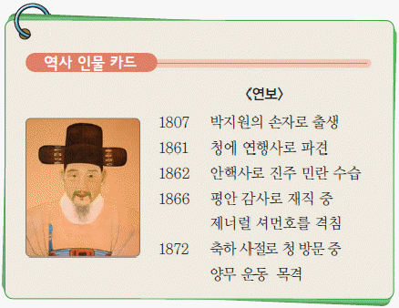
- 북학의를 저술하였다.
- 독립신문을 창간하였다.
- 고종에게 개항을 건의하였다.
- 황국중앙총상회를 조직하였다.
- 일본에서 조선책략을 들여왔다.
(정답률: 46%)
33. 다음 사건의 결과로 옳은 것은? [1점]
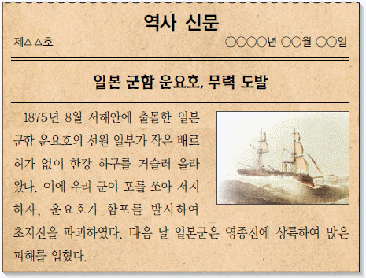
- 5군영이 설치되었다.
- 통신사가 파견되었다.
- 척화비가 건립되었다.
- 병인양요가 일어났다.
- 강화도 조약이 체결되었다.
(정답률: 85%)
34. 다음 사건에 대한 설명으로 옳은 것은 <보기>에서 고른 것은? [2점]
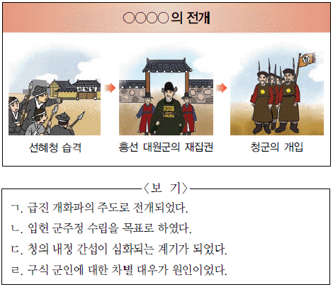
- ㄱ, ㄴ
- ㄱ, ㄷ
- ㄴ, ㄷ
- ㄴ, ㄹ
- ㄷ, ㄹ
(정답률: 78%)
35. 다음 주장에 따라 추진된 정책으로 옳지 않은 것은? [2점]
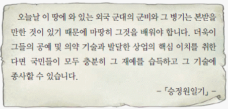
- 무기 제작 기구인 기기창을 창설하였다.
- 근대 교육 기관인 육영 공원을 설립하였다.
- 박문국을 설치하여 한성순보를 발간하였다.
- 상설 화폐 주조 기구인 전환국을 설립하였다.
- 수취 제도 개선을 위하여 삼정 이정청을 설치하였다.
(정답률: 57%)
36. (가) ~ (다) 유적을 답사 계획에 따라 옳게 나열한 것은? [3점]
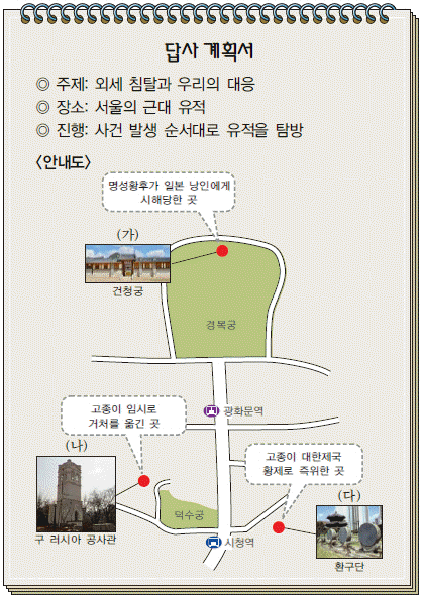
- (가) - (나) - (다)
- (가) - (다) - (나)
- (나) - (가) - (다)
- (나) - (다) - (가)
- (다) - (가) - (나)
(정답률: 61%)
37. 다음에 해당하는 교육 기관으로 옳은 것은? [1점]
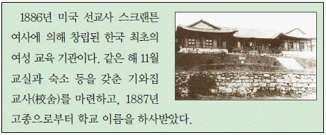
- 동문학
- 배재 학당
- 원산 학사
- 이화 학당
- 한성 사범 학교
(정답률: 82%)
38. 다음 대화의 주제에 해당하는 문화유산으로 옳은 것은? [1점]
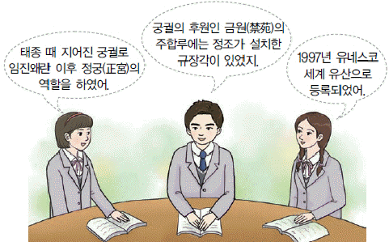
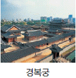
(정답률: 49%)
39. 교사의 질문에 대한 학생의 답변으로 옳은 것은? [2점]
- 경부선 등의 철도 부설을 목표로 세워졌습니다.
- 한인 애국단원인 이봉창의 폭탄 공격을 받았습니다.
- 금융 장악을 위해 화폐 정리 사업을 추진하였습니다.
- 총독부가 빼앗은 토지를 일본인에게 넘기는 역할을 하였습니다.
- 농민들의 불만을 무마하고자 농촌 진흥 운동을 주도하였습니다.
(정답률: 78%)
40. 다음 희곡의 주인공에 해당하는 인물로 옳은 것은? [2점]
(정답률: 91%)
41. (가) 인물에 대한 설명으로 옳은 것은? [1점]
- 독립문 건립을 주도하였다.
- 시일야방성대곡을 신문에 발표하였다.
- 왜양일체론을 주장하며 개항에 반대하였다.
- 재정 확보를 위한 당백전 발행을 주장하였다.
- 친일파 처단을 위해 오적 암살단을 조직하였다.
(정답률: 51%)
42. 다음 민족 운동의 배경으로 옳은 것을 <보기>에서 고른 것은? [3점]
- ㄱ, ㄴ
- ㄱ, ㄷ
- ㄴ, ㄷ
- ㄴ, ㄹ
- ㄷ, ㄹ
(정답률: 55%)
43. 다음 법령이 시행된 결과로 옳은 것은? [2점]
- 농광 회사가 설립되었다.
- 물산 장려 운동이 전개되었다.
- 산미 증식 계획이 추진되었다.
- 조선인이 기업 활동이 억제되었다.
- 근대적 토지 소유권이 확립되었다.
(정답률: 78%)
44. 다음 공모전 작품에 들어갈 자료로 옳은 것을 <보기>에서 고른 것은? [3점]
- ㄱ, ㄴ
- ㄱ, ㄷ
- ㄴ, ㄷ
- ㄴ, ㄹ
- ㄷ, ㄹ
(정답률: 58%)
45. 다음 설명에 해당하는 문화유산으로 옳은 것은? [1점]
(정답률: 79%)
46. 다음 민족 운동에 대한 설명으로 옳은 것은? [2점]
- 신민회의 조직적인 지원을 받았다.
- 민족 유일당 운동의 계기가 되었다.
- 대한매일신보의 후원으로 전개되었다.
- 광주에서 시작하여 전국으로 확산되었다.
- 선교사 스코필드에 의해 전 세계에 알려졌다.
(정답률: 44%)
47. 다음 단체에 대하 설명으로 옳은 것은? [3점]
- 1⑤인 사건으로 해체되었다.
- 신간회와 연계하여 활동하였다.
- 민립 대학 설립 운동을 전개하였다.
- 대성 학교와 오산 학교를 설립하였다.
- 브나로드 운동에 주도적으로 참여하였다.
(정답률: 69%)
48. 다음 법령에 따라 추진된 정책에 대한 설명으로 옳은 것은? [2점]
- 농촌 진흥청의 주도로 추진되었다.
- 근면, 자조, 협동을 구호로 내세웠다.
- 유상 매입, 유상 분배 방식으로 이루어졌다.
- 양전 사업과 지계 사업을 동시에 진행하였다.
- 제1차 경제 개발 5개년 계획의 주요 시책이었다.
(정답률: 62%)
49. 다음 성명을 발표한 정부의 통일 노력으로 옳은 것은? [2점]
- 개성 공단 조성에 합의하였다.
- 남북 조절 위원회를 구성하였다.
- 남북 기본 합의서를 채택하였다.
- 경의선 철도 연결 사업을 시행하였다.
- 금강산 육로 관광 사업을 개시하였다.
(정답률: 49%)
50. 다음 사건이 있었던 시기를 연표에서 옳게 고른 것은? [2점]
- (가)
- (나)
- (다)
- (라)
- (마)
(정답률: 57%)